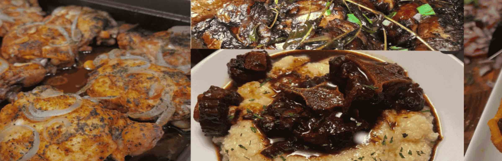

Our family-owned catering business, based in Roxbury, Massachusetts, specializes in delicious Caribbean cuisine made with love, tradition, and authentic flavors. Everyone in our household plays a role, from preparing the food to serving our customers, making our business a true family effort. We take pride in bringing the taste of the Caribbean to every event, creating memorable meals that bring people together.
Our Turkey Wings are a standout choice, offering tender, well-seasoned meat paired with classic sides like creamy Mac & Cheese or Mashed Potatoes, homemade Corn Bread, and refreshing Cucumber Salad. For those looking for something richer, the Oxtail is another signature dish, slow-cooked for deep flavor and served with the same selection of comforting sides. Whether you're craving savory turkey wings or tender oxtail, Kitchen96 brings generous portions and family-style flavor to the table.